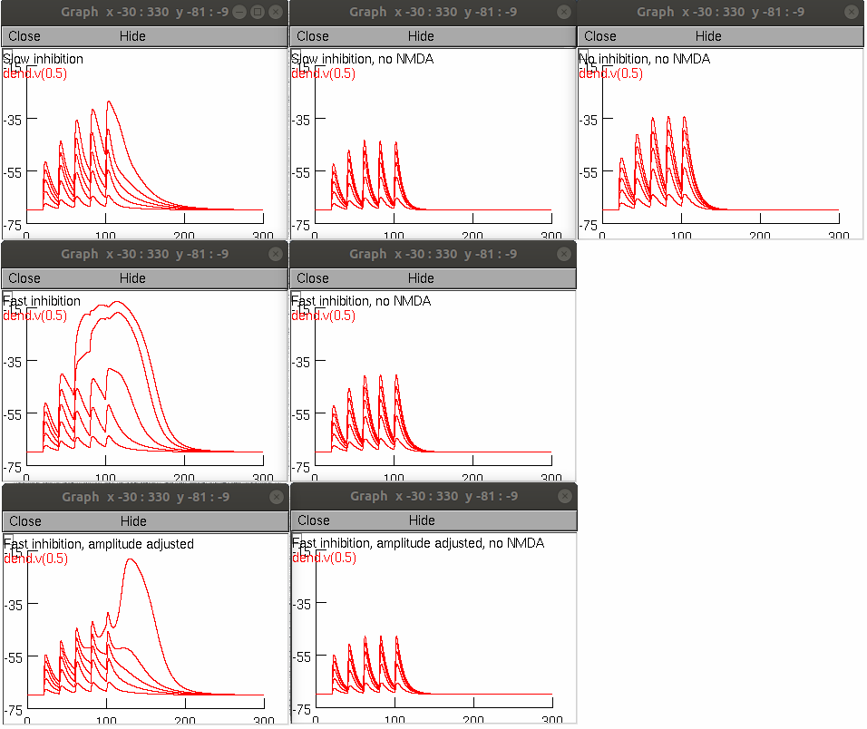

This is the readme for models that reproduce figure 7 in the paper:
Schulz JM, Knoflach F, Hernandez MC, Bischofberger J (2018) Dendrite-targeting interneurons control synaptic NMDA-receptor activation via nonlinear a5-GABAA receptors. Nat Commun 9:3576
http://dx.doi.org/10.1038/s41467-018-06004-8
This NEURON code was contributed by JM Schulz.
The files contain the NEURON code for Fig.6 and Fig.7. The model is a single dendritic compartment with one glutamatergic and GABAergic synapse. Physiological properties of GABA synapses were modeled as determined by optogenetic activation of inputs during voltage-clamp recordings in Schulz et al. 2018. The simulation can be run by starting start_simul.hoc after running mknrndll. The files that model the individual figures have to be uncommented in start_simul.hoc beforehand.
If you need more help in running the model on your platform please consult:
https://senselab.med.yale.edu/ModelDB/NEURON_DwnldGuide.cshtml
Running the start_simul.hoc (with nrngui) in its default state reproduces panels from figure 7:
